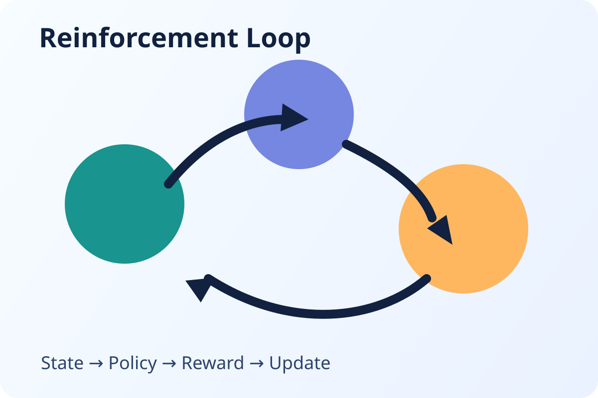
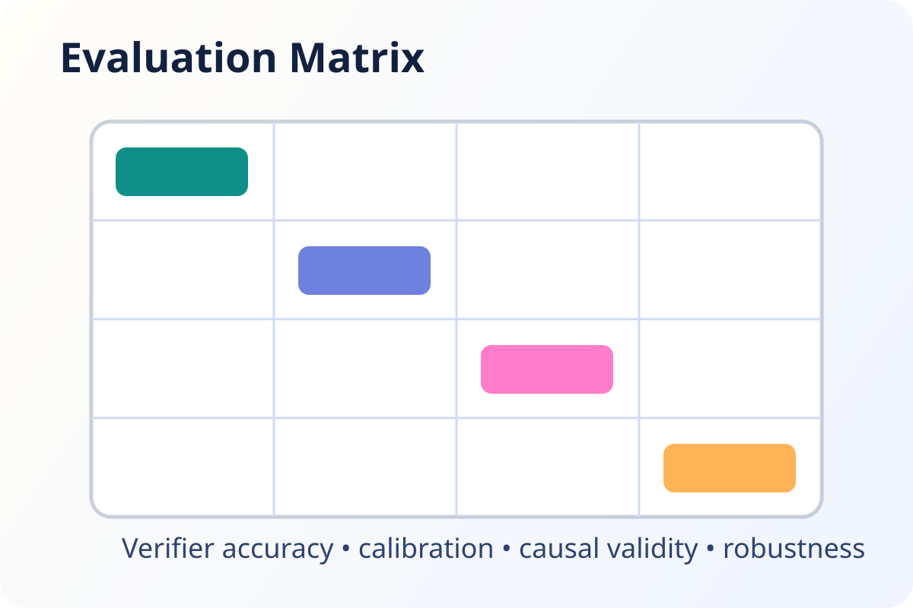
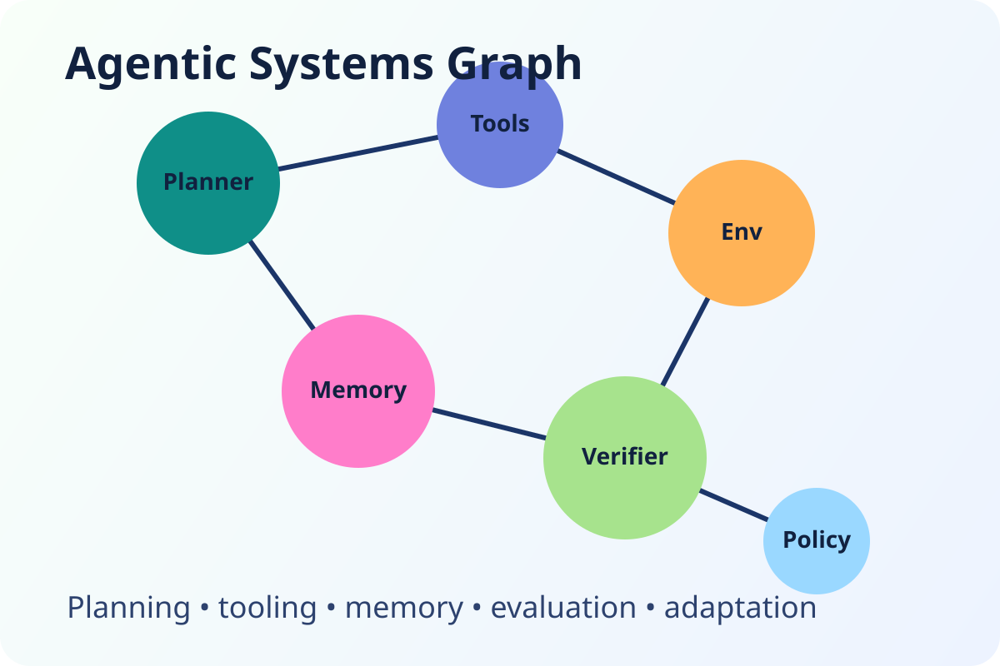

Evaluation Methods
Interventional evaluations, causal frameworks, counterfactual test construction.
ACM CAIS 2026 Workshop
We invite submissions of 4-page short papers on methods, RL environment design principles, benchmarks, and real-world case studies for evaluating AI agents. Work-in-progress research is welcome.
Agentic systems increasingly rely on autonomous reasoning, tool use, and multi-step planning. Traditional LLM and RL benchmarks rarely capture high-value professional workflows, especially under realistic constraints.
This workshop asks: what makes a reinforcement learning environment actually useful for training and evaluating AI agents that deliver measurable economic impact after deployment?



Interventional evaluations, causal frameworks, counterfactual test construction.
Verifiers, rubric systems, LLM-as-a-judge reliability and calibration studies.
New agent benchmarks, failure analyses, benchmark contamination and drift.
Environment design, tool interfaces, synthetic trajectories, software frameworks.
Applied case studies connecting evaluation design to production outcomes.
Code execution, NL2SQL and structured queries, computer use, multimodal I/O, MCP tools, skills, memory, and web search.
We invite submissions of 4-page short papers on new methods, RL environment design, benchmarks, and real-world case studies for evaluating AI agents. We especially welcome work in progress research.
Submit your paper through the official OpenReview workshop portal.
OpenReview SubmissionQuestions: rl-eval@googlegroups.com
Industry Keynote
Large-scale agent evaluation and reliability under production constraints.
Research Keynote
Frontiers in RL environments for tool-using language agents.
Panel Moderator
Cross-sector perspective on benchmark quality and economic outcomes.
Handshake
Leads a group advancing Data and Evaluations for frontier AI. Previously at Cleanlab, where he pioneered methods to detect and remediate issues in enterprise AI agents. Earlier, he was a Senior Scientist at AWS building AutoML and deep learning services. He completed his PhD at MIT CSAIL and undergraduate studies at UC Berkeley.
Handshake
Leads research on RL environments and post-training. Previously co-founder and CTO at Cleanlab (acquired by Handshake). He completed his PhD at MIT CSAIL in the PDOS group, advised by Frans Kaashoek and Nickolai Zeldovich.
Oracle AI
Leads enterprise-scale AI initiatives in conversational AI, multilingual LLMs, agentic systems, and AI observability platforms. Research interests include agentic systems, evaluations, low-resource languages, and responsible AI.
Oracle AI
Works in GenAI evaluations across multimodal, text, and code generation. Also an Ethics and Technology Practitioner 2026 Fellow at Stanford. Previously worked in AI safety at Microsoft Responsible AI research.
University of Washington, Google DeepMind
Focuses on social reinforcement learning in multi-agent and human-AI interactions. During her PhD at MIT, she developed foundational RLHF techniques for language models. Her work has received awards at NeurIPS and ICML and has been widely featured in research and media venues.
humans&
Previously worked on RL and post-training at Anthropic across Claude 3.5 to 4.5, and completed her PhD at MIT CSAIL advised by Jacob Andreas and Julie Shah. Her work centers on agents that learn representations from rich human knowledge.
Boson AI
Leads reinforcement learning and modeling efforts for robust agentic systems across changing tasks and environments. Previously a researcher and tech lead at AWS, and a founding member of post-training efforts for Amazon’s early RLHF models.
Co-located with ACM Conference on AI and Agentic Systems (ACM CAIS 2026), held from May 26–29, 2026 in San Jose, California.
Main venue: DoubleTree by Hilton San Jose, 2050 Gateway Place, San Jose, CA 95110.
Publication mode is being finalized with the workshop and ACM CAIS organizing teams.
Submissions under review elsewhere are allowed, but already published papers are not.
Researchers and practitioners in evaluation, benchmarks, RL environments, and deployment.